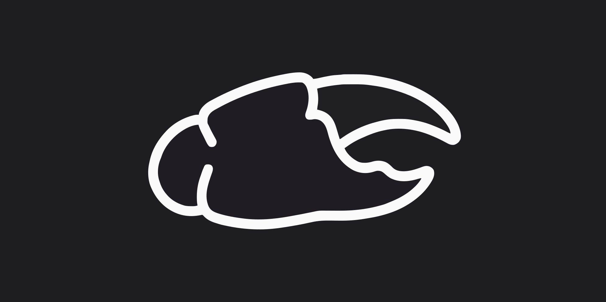

Run Claude Code agents unattended.
chela only merges a PR once it has proved the tests catch broken code.
A tracker task becomes a worktree, an agent and a PR; a mutation-testing
judge must pass on its head commit before chela merge will land it.
Free & open source (AGPL-3.0) · runs on your machine, on your Claude subscription
Install
Requires Linux, WSL or macOS · Python ≥ 3.11 · tmux · git · uv · the claude CLI · gh (for the PR flow)
git clone https://github.com/Devail1/chelamux && cd chelamux
uv sync --all-extras
uv run chela status- Log the
claudeCLI in once (claude, then/login). chela drives it and never handles credentials. - Inside Claude Code, add the hooks plugin that enforces the merge gate:
/plugin marketplace add Devail1/chelamux, then/plugin install chela@chela. - Follow Getting started: about 10 minutes from clone to a first agent-opened PR.
Status: early. The core (scheduler, dispatcher, messaging) is solid and tested; the dashboard and live wall ship in the same install. chela is self-hosted and single-user: you run it on your own machine, driving one Claude account (the whole fleet shares its 5h / weekly rate limits).
How it works
From a tracker task to a merged PR, and the one place a human is asked.
-
Step 1: Tracker → worktree agent
A ready task in Linear, GitHub issues or a
TODO.mdbecomes one git worktree, one agent and one PR. -
Step 2: The judge corrupts the code
For each guard the PR claims, it breaks the code under test and re-runs the suite. A guard that stays green sends the PR back for rework.
-
Step 3:
chela mergerefuses…unless the judge said clean on the PR's current head, CI is green and the PR is mergeable. A new push voids the verdict.
THE GATE -
Step 4: One-tap override, audited
chela merge --override --reason …asks you. One Telegram tap (or the dashboard) approves it, re-checks head and CI, and records who approved.
The full lifecycle, every command and the rework rules: docs/RUNS.md.
Why chela
Other tools run agents well. chela is about what happens after the agent says “done”.
| Capability | chela | Claude desktop app / Agent view | A tmux session manager | A hosted issue-to-PR platform |
|---|---|---|---|---|
| A merge gate that blocks | Yeschela merge refuses; a direct gh pr merge is denied by the hooks plugin |
Noyou review and merge | Nonot in scope | Noopens the PR; merging is your repo's review |
| Verdict bound to the commit | Yesjudge verdict + override both bound to the PR head; a push voids them | No | No | Notypically CI status only |
| Local-first, on your subscription | Yesdrives your logged-in claude CLI; no API key |
Yes | Yes | Noruns in the vendor's cloud |
| Any CLI agent in a live terminal | Partlyany tmux window streams on the Wall; dispatch's agent.cmd is free-form, but the hooks and judge are built for Claude Code |
NoClaude Code sessions | Yes | Nothe vendor's agent |
| Sandbox | Opt-inoff by default; agent.sandbox: true per workflow |
Opt-inClaude Code's Bash sandbox | No | Yestypically a cloud VM per task |
And you can watch it all live
A terminal-wall dashboard, a Telegram bridge to every session, and schedules for long-lived agents.
Schedule agents
Poke an agent on an interval or cron (every 1h, 0 */8 * * *)
or once at a set time. chela types the prompt into its pane when it fires.
Closes the loop
An orchestrator is just another agent: it can only act when something messages it. chela
pushes completions, blocks and deaths back into the orchestrator's own session, gated on
idle so a live agent is never interrupted. How it works →
The wall
A live grid of every agent's terminal, each pane marked working, needs you, PR open or idle, with a context-window bar and 5h / weekly rate-limit readouts. Its sibling view, Work, holds the dispatch board, runs and schedules.
Collaborative terminals END-TO-END ENCRYPTED
Share any agent's live terminal over the internet with a link + a pairing code. It's view-only by default, with typing only into a sandboxed session you allow, and multi-user with live Figma-style cursors and a presence facepile, and mobile-friendly. The relay in the middle only ever sees ciphertext; the keys never leave the browsers.
See how it works →Share a live terminal, end-to-end encrypted
Hand someone a link and a pairing code. They watch the same session in their browser (and type, in a sandboxed session you allow). Everyone sees everyone as live cursors, and the relay in the middle only ever sees ciphertext.
Link + pairing code
Click Share on any pane. The code is the key: 16 random bytes both browsers turn into AES-256-GCM keys with HKDF, in-browser. A wrong code simply can't decrypt.
Zero-knowledge relay
A dumb WebSocket fan-out that broadcasts opaque frames. It never holds a key, and sees metadata only. Run your own (a small Cloudflare Worker) so even that stays yours.
Everyone's present
Live labeled cursors mapped to the grid, plus a facepile of who's watching (the host gets a ★). Presence rides the same encryption. It's colorblind-safe, with names not just colors.
Mobile & revocable
Phone joiners get an on-screen keys-line, swipe-to-scroll, and touch cursors. Stop a share and the room dies + the code rotates; a topbar kill-switch stops everything at once.
Latest release: what shipped, version by version. see it on GitHub Releases →
FAQ
Is it safe to run unattended?
Be clear about what is and isn't guarded. Dispatched agents run unsandboxed by
default (as your user, with your tools and network) under Claude Code's
--permission-mode auto classifier, with no inherited MCP servers and an
allowlisted environment. A measured sandbox exists and is opt-in per workflow
(agent.sandbox: true in WORKFLOW.md).
What chela does guarantee is the other end, and how much depends on the PR's risk tier.
In every tier, a PR that touches an always-human path (the workflow file,
CI config, the merge gate itself) merges only with your audited approval. Otherwise
chela merge needs green CI and a mergeable PR whose live diff still fits its
tier, plus:
Core (the dispatcher, the judge, the merge machinery, agent instructions): a clean judge verdict on its head commit, or your audited approval. The judge corrupts each guard the PR claims and checks its tests turn red. A clean verdict is carried across a head move that touches none of the PR's own files, such as a merge from the base branch (re-stamped, not re-judged).
Standard (product and UI work): no per-PR judge. The agent's hand-in runs lint (when configured) and one full suite, and a nightly sweep then corrupts what merged the same way and files an issue per category of guard that survives. A weak guard there is found after merge, not blocked before it.
Prose (docs, changelog, media): green CI.
The full posture: TRUST_AND_APPROVAL_POSTURE.md.
Does it need an API key?
No. chela never handles credentials: it drives the claude CLI inside
your tmux windows, so every agent reuses the one login you made with /login
(or claude setup-token on a headless box). The tracker integrations need their own
tokens: gh logged in for GitHub, a personal API key for Linear.
Linux, macOS or Windows?
Linux and macOS natively. On Windows, run it inside WSL, because chela is built on
tmux, which has no native Windows build.
How is it different from Claude's built-in agents?
Claude Code's Agent view and the desktop app are great at running and watching many sessions, and chela runs those same Claude Code sessions. What chela adds is the part after “done”: tracker-driven dispatch into worktrees, a mutation-testing judge whose verdict is bound to the PR head, and a merge command that refuses without it. See Why chela.
What's the license?
AGPL-3.0-or-later. Use it freely, privately or commercially, and modify it as you like; if you distribute a modified version or run one as a network service, publish your source under the same licence. Versions up to and including 0.3.0 were MIT. LICENSE.
What does it cost?
chela itself is free. The agents run on your own Claude plan, so the cost is your subscription's usage: the whole fleet (coding agents and judges) shares one account's 5h / weekly limits. The dashboard shows the limit bars and burn rate so you can see it.